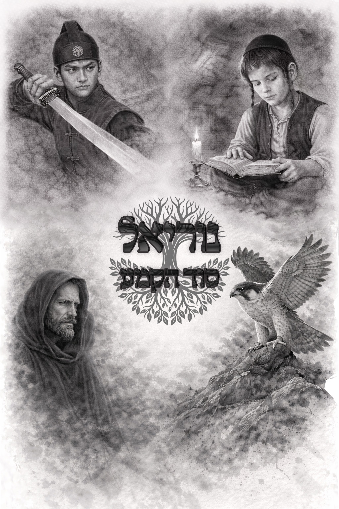
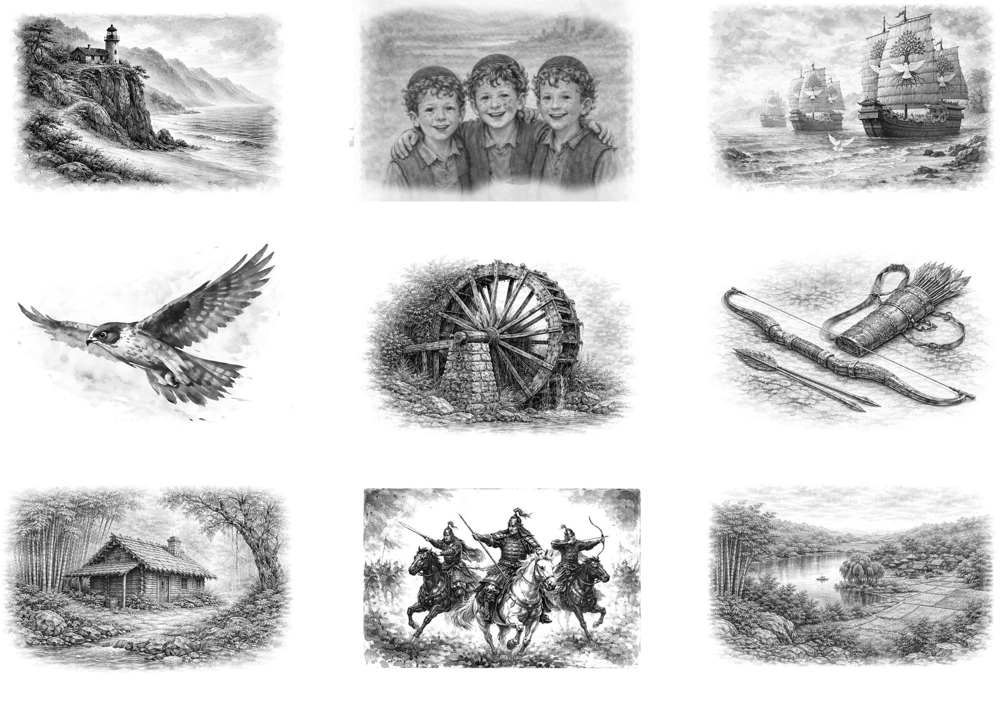
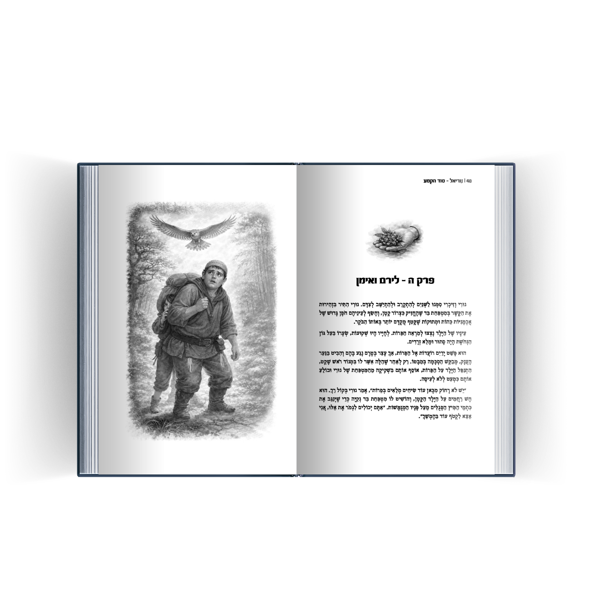

נוריאל - סוד הקמע
כל שלבי היצירה
- כתיבת הספר
- פיתוח העלילה והעולם
- עיצוב דמויות
- יצירת האיורים
- עיצוב כריכה
- עיצוב פנים הספר
- עימוד ב־Adobe InDesign
- הכנה מלאה לדפוס
כל שלבי היצירה

דף השער ממשיך את השפה החזותית של הספר ומחבר בין הכריכה לבין העולם הפנימי של הסיפור.

לכל פרק עוצב איור פתיחה ייחודי שנועד להכניס את הקורא לאווירה עוד לפני תחילת הקריאה.
האיורים נבנו כחלק בלתי נפרד מן העיצוב הפנימי של הספר ומלווים את הסיפור לכל אורכו.

הספר עומד במלואו בתוכנת Adobe InDesign.
העיצוב הפנימי תוכנן כך שישלב קריאות נוחה לצד נוכחות חזותית עשירה, תוך התאמה בין הטיפוגרפיה, האיורים וקצב הקריאה.

עבור הספר עוצב פורזץ מקורי הכולל מקום להקדשה אישית.
גם פרט זה תוכנן כחלק מן החוויה הכוללת של הספר ומשמש כהקדמה חזותית לעולם הסיפור.

האיורים נוצרו בתהליך משולב של פיתוח חזותי, בחירת קומפוזיציות ועבודת עיבוד פרטנית בפוטושופ.
כל דימוי עבר התאמות רבות עד להשגת התאמה מלאה בין התמונה לבין הטקסט שאותו היא מלווה.
דמותו של נוריאל עצמה עברה תהליך ארוך של חיפוש ופיתוח עד לגיבוש הדמות המופיעה בספר ובכריכה.
שם הספר: נוריאל — סוד הקמע
שנה: 2026
היקף: 310 עמודים
פורמט: כריכה קשה
כלים: Adobe Photoshop · Adobe InDesign